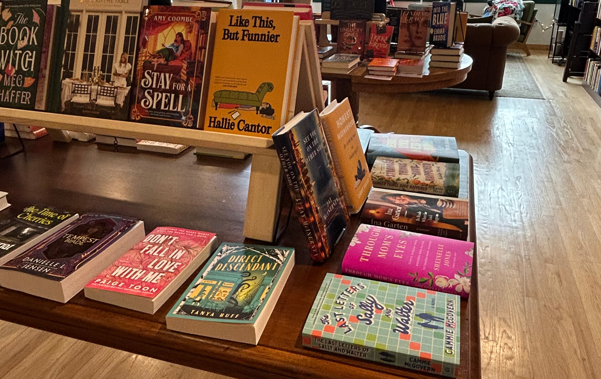

Third Places Benefits

Community
Third Places allow for accessible and diverse areas of meeting for people from a variety of different backgrounds. Whether it’s a library, church, community center, or at a book club. These areas allow for interaction with peers beyond those encountered at home and work- and thus do not share a commonality with oneself. In doing so, it promotes social and emotional development, while also allowing for more social interactions and relationships to develop, especially during a time where loneliness has become more widespread.
Equity
Third Places serve as informal leveler between classes- it allows individuals usually divided by different roles within places like the office, or university to be on more equal footing for conversations and activities. The ability of being able to informally discuss and chat with peers is more relaxed, to quote Oldenburg, “ A place that is a leveler is, by its nature, an inclusive place” (Oldenburg 25). Thus allowing for more acceptance and honest conversations and connections to be formed between individuals, and can even be expanded on outside of third places- including back at a workplace or university.
Personal Development
Third Places serve as accessible havens for individuals to develop personal fulfillment in areas free from responsibilities or distractions that stem from first or second places, like the home and workplace. In doing so it also provides a location specifically for leisure, community, and especially for third places such as community centers, libraries, bookstores, churches, etc- include personal advancement whether socially, intellectually, spiritually, or a combination of numerous attributes. In doing so third places help benefit not only the individual but also the community, by serving as an accessible place to be outside of the workplace or home.